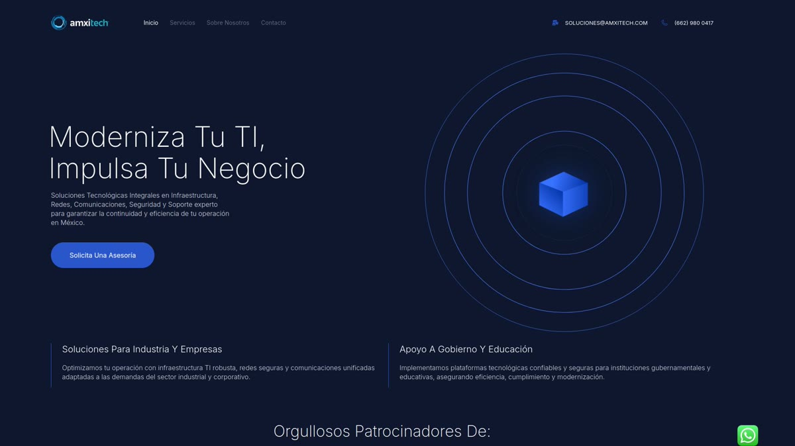
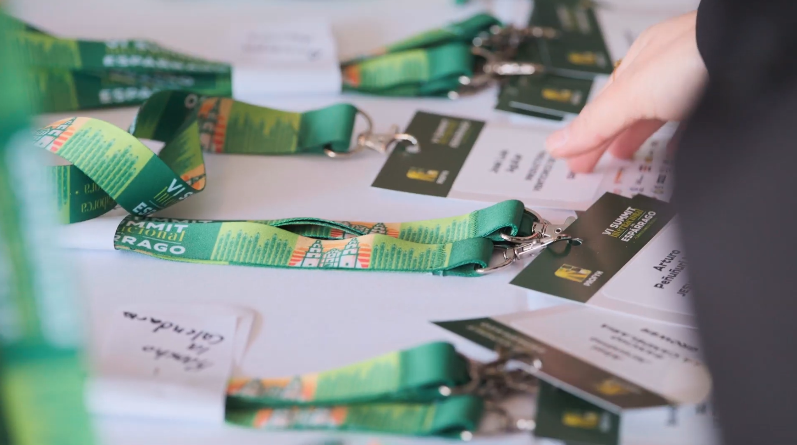
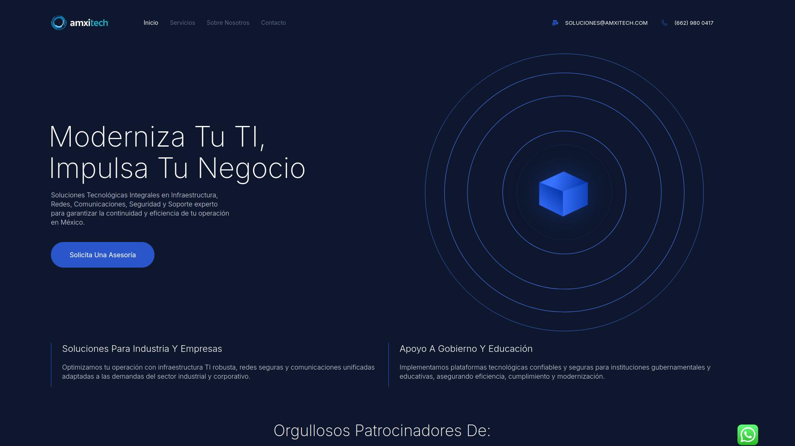
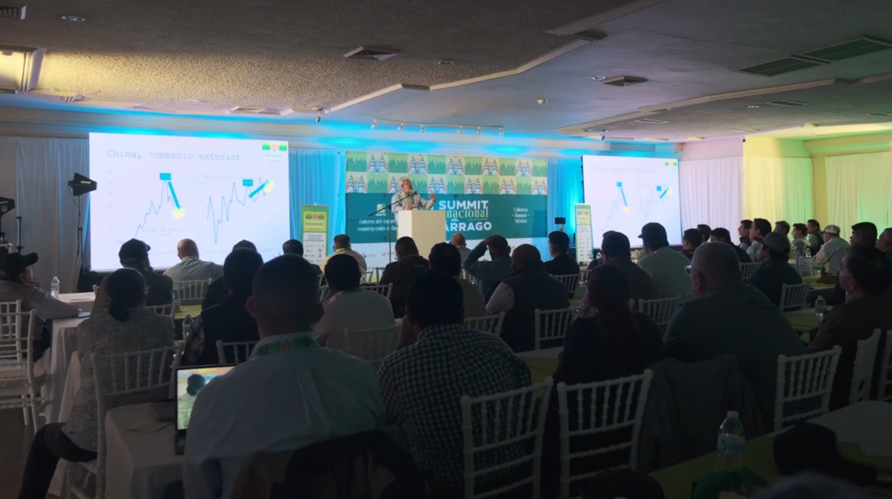

§ 01 — UI/UX · web · B2B tech
AMXiTech
Translating a technology identity into a clear, responsive, commercially oriented experience for a B2B IT services company.
Live site · amxitech.com
WordPress · Elementor
Sub-brand of Amerimex

The brand, applied.
Taking the accepted visual direction and translating it onto a web surface without losing rigour: type, colour and air between components.


Site architecture.
A flat architecture built to explain services and move the visitor toward commercial contact without friction.


A logo doesn't solve B2B trust — the page does, when it's well built.
— Web design criterionAMXiTech · 2025
Up next: the modular system — how the site was built and how it holds up in production.
A modular component system.
1
Site · amxitech.com
Responsive
Mobile + desktop
B2B
Lead generation
WordPress
Elementor builder
Deliverables
- WebsiteMain landing at amxitech.com with services, sectors and contact sections.
- Component systemCards, service modules and reusable editorial blocks.
- ResponsiveFull adaptation across mobile, tablet and desktop.
- Brand applicationTranslation of typography, colour and composition to the digital layer.
- Lead captureHierarchy built around contact and lead forms.
A digital face.
The site went live at amxitech.com: a commercial, modular digital face aligned to the rebrand, built to sustain B2B lead generation.
ClientAMXiTech · sub-brand of Amerimex
IndustryB2B Technology · IT services
RoleLead UI/UX & Web designer · brand application
AgencyIntuitiva · Mérida
Year2025
Siteamxitech.com
← Previous projectVI SummitEvent system · agribusiness
Next project →Los Pollos GirosIdentity · food & beverage
© 2026 Julio Morcillo — All rights reserved.
Designed and built in Mérida, MX.